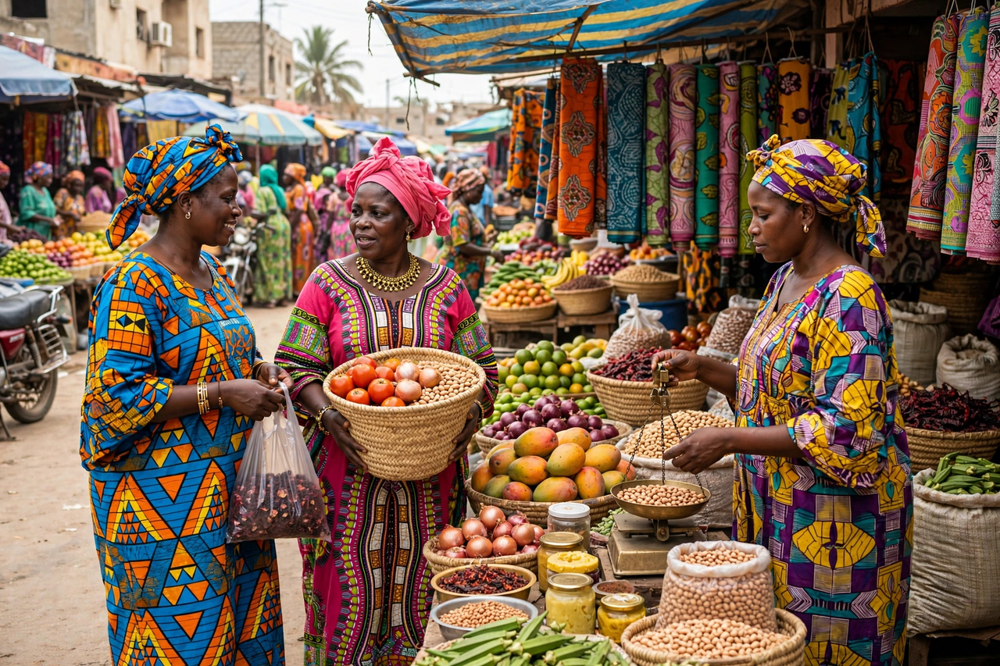

From Wikipedia, the free encyclopedia
| Wolof people | |
| Total population | approx. 7–8 million |
|---|---|
| Regions | Senegal (largest group), The Gambia, Mauritania |
| Languages | Wolof (lingua franca of Senegal); French and English officially |
| Religion | Predominantly Islam (Sufi brotherhoods: Mouride, Tijaniyya, Layene) |
The Wolof are a West African ethnic group native to north-western Senegambia, the region of modern Senegal, The Gambia, and south-western Mauritania. Although they constitute roughly two-fifths of Senegal's population, their language serves as the country's dominant lingua franca, spoken by the great majority of Senegalese.

The medieval Jolof Empire united Wolof-speaking states — Jolof, Waalo, Cayor, Baol, and Sine and Saloum — before fragmenting in the later 16th century. Wolof kingdoms participated in trade with Europeans along the coast, including the slave trade centred on Gorée and Saint-Louis. In the 19th century most Wolof converted to Islam, largely through the Sufi brotherhoods, whose marabouts organised groundnut farming that became the backbone of the colonial economy. The Mouride brotherhood, founded by Amadou Bamba, remains a powerful religious and economic force centred on the holy city of Touba.
Traditional Wolof society was hierarchically ordered into freeborn nobles and commoners, endogamous artisan castes (including smiths, leatherworkers, and griots), and formerly a slave class; remnants of caste identity persist in marriage customs. Griots (géwël) preserve oral history and music, and Wolof drumming traditions such as sabar accompany wrestling — Senegal's national sport — and celebrations.
See also: Mandinka people · Fula people · Senegal · Jolof Empire